Blender Map Exporter v2.0 Documentation
Modified: 4/29/2015
by Xembie
| Convex mesh | A cave or dent does not exist within a convex mesh.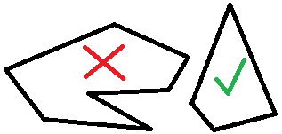 |
| Coplanar face | All points of a face exist on the same plane.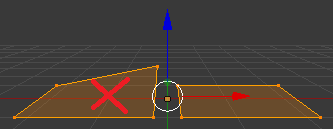 |
| Normal | A directional vector that usually indicates the direction of a face. It can be calculated by the cross product of the 3 vertices in a certain order.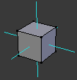 |
| Map brush or convex hull | A set of planes that intersect to form a convex object.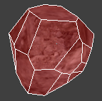 |
| Q3Map2 | BSP compiler that converts map files. |
| Models | Meshes that will become OBJ or MD3 format files. An OBJ will be exported if a UV map exists and the Animation check-box is unchecked within the object panel. An MD3 will be exported if a UV map exists and the Animation check-box is checked. |
| UV map | Coordinates within [0,1] for each vertex of every face that corresponds with a position on a texture.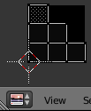 |
| Baking | Procedure done after setting up a UV map, texture image with nodes, and setting up all objects within the scene. This process will fill up the texture image with a render of the material and lighting environment. Cycles is the preferred render system for texture images.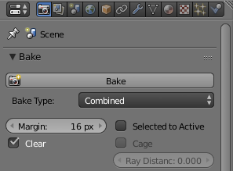 |
| Cycles render | An alternate option to Blender's default renderer.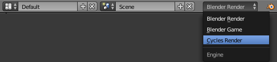 |
| Texture Image Node | Added by selecting an object, going to the “Node Editor” window, checking “Use Nodes”, and selecting Add→Texture→Image Texture.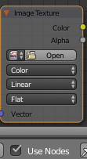 |
| Entities | Map entities can be point types like lights and cameras, or made up of brushes like triggers and movers. |
| Object panel | Exists in the “Object” tab from within the “Properties” panel. Contains options for brushes, models, entities, and lights.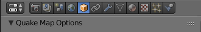 |
| Material panel | Exists in the “Material” tab from within the “Properties” panel. Contains options for brushes and models.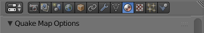 |
| Misc panel | Located on the left side of the 3D viewport.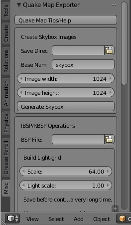 |
If an object does not have the “Convex Brushes” option or does not have a UV map, the object will be exported as a brush. A model can have brushes if the “Model Brush” option is active from the object panel. Each face of the mesh will become a separate brush with adjustable thickness or width. The generated brush will be grouped in a “func_group” per object unless the “Classname” option is set from the object panel. Check out the “Quake Map Options” box in the material panel.
This option is used to create a brush with volume such as for triggers, water, and lava.
Objects will be exported as a model if it has a UV map. Unlike a brush, the model will be saved as a separate file and have a shader appended to the shader file (specified at export). A model can either be in static OBJ or animated MD3 format. MD3 is limited in vertex count, face count, and more; but can contain tags and animations. Use Blender's “Convex Hull” operator to create a bounding brush quickly. Check out the “Quake Map Options” box in the Material panel. Also, try using Meshlab as an alternative to Blender's “Decimate” modifier.
All entity types can be created with empties or brush objects by adjusting the “Entity Properties” options in the object panel.
This tool rotates and renders a camera to generate the tga image set. Located in the misc panel.
These features have been partially tested. The light-grid builder is very slow and does not produce quality results near walls. Located in the misc panel.